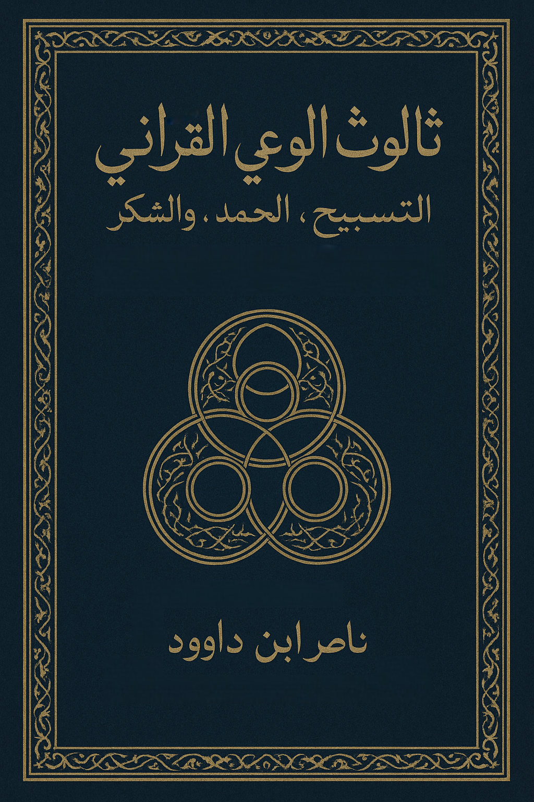

"منذ أن نطق الوجود بكلمة 'كن'، بدأ التسبيح،
ومنذ أن وعى الإنسان ذاته، بدأ الحمد،
ومنذ أن ردّ الوعي إلى مصدره، بدأ الشكر.
بهذا الثالوث — التسبيح، الحمد، الشكر — تتجلّى خريطة الوعي القرآني في أبسط وأعمق صورها."
وصف الكتاب
يقدم هذا العمل رحلة استثنائية في عمق الثالوث القرآني: التسبيح، الحمد، الشكر، حيث يتجاوز التفسير التقليدي إلى قراءة كونية تربط بين النظام الإلهي والوعي الإنساني.
الكتاب ليس مجرد دراسة مفاهيمية، بل هو خريطة وجودية تهدف إلى كشف القوانين الكونية التي تحكم الوعي وتصل الإنسان بمصدره الإلهي عبر مرآة القرآن.
الرؤية المنهجية
يعتمد الكتاب على قراءة كونية للغة القرآن، حيث يصبح التسبيح نظام التشغيل الكوني، والحمد طاقة الفيض الوجودي، والشكر الاستجابة الواعية للإنسان. يقدم رؤية متكاملة تربط بين الذرة والمجرة، بين الفكر والوجود.
يجمع الكتاب بين التحليل اللغوي العميق والبعد الكوني الأصيل، مقدمًا منهجية متكاملة لفهم القرآن كمرآة للنظام الكوني والوعي الإنساني.
أبرز مميزات الكتاب:
- كشف الثالوث القرآني: التسبيح، الحمد، الشكر
- ربط النظام الكوني بالوعي الإنساني
- قراءة في فقه اللسان القرآني الكوني
- اتحاد بين العلم والتصوف، التفسير والوعي
- منهجية تطبيقية للبرمجة الوعيوية اليومية
الهيكل الرئيسي:
- الجزء الأول: من النظام الكوني إلى البرمجة الوعيوية
- الجزء الثاني: من الفكر إلى التفعيل - الدليل التطبيقي
- الخاتمة: من البيان إلى الشهود - اكتمال دورة الوعي
فهرس المحتويات
الخاتمة: من البيان إلى الشهود
"بعد أن يقطع القارئ رحلته من التسبيح إلى الفناء، ومن الكفر إلى الرؤية، ومن القول إلى الوعي، يدرك أن المقصد ليس في جمع المعاني، بل في بلوغ المعنى الذي يجمع كل المعاني."
"حينها يذوب الحجاب بين الفكر والوجود، ويصير الإنسان مرآةً لله في الأرض، يتكلم بالحق، ويعمل بالحمد، ويعيش بالشكر."
لمن هذا الكتاب؟
- الباحثون في الدراسات القرآنية: المهتمون بالرؤى الكونية الجديدة
- المهتمون بالوعي الروحي: الراغبون في فهم الأسس القرآنية للوعي
- علماء اللغة والبيان: الباحثون عن المنهجية القرآنية في فهم الوجود
- المفكرون والفلاسفة: المهتمون بفلسفة الوعي والوجود
- عموم القراء: الراغبون في فهم نظام الكون عبر مرآة القرآن